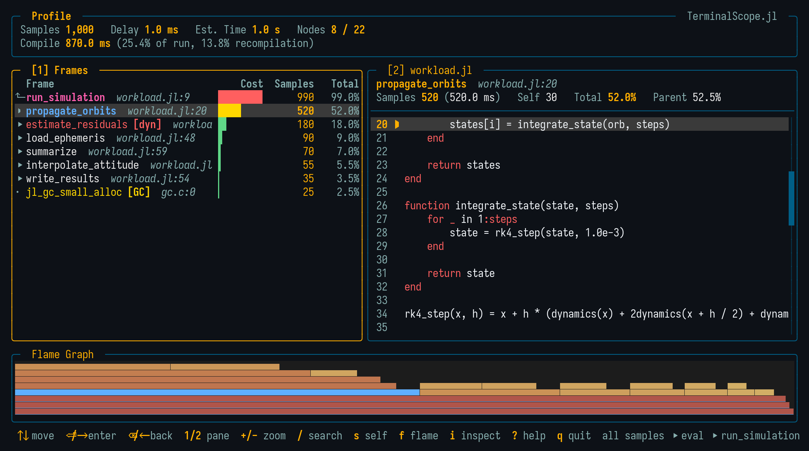

Runtime Profile
The default mode of @scope runs an expression under Julia's sampling profiler and opens the interactive viewer with the resulting call tree:
@scope([delay = seconds,] [n = samples,] expr)The value of expr is discarded. While the expression runs, its compilation time is also measured and shown in the viewer header.
The following options are available:
delay: Time [s] between two profiler samples, forwarded toProfile.init. Use a smaller delay to resolve short-running code. (Default: the currentProfile.initsetting, usually0.001)n: Size of the sample buffer, forwarded toProfile.init. A smaller delay usually requires a larger buffer. (Default: the currentProfile.initsetting)
The Viewer

The header shows the total number of samples, the sampling delay, the estimated wall clock time, and — when the expression was run through the macro — the time spent compiling, with the fraction of the run and the fraction due to recompilation.
The frame list shows one level of the call tree at a time: the current node as a pinned parent row (marked with ⬑) followed by its children, sorted by cost. Each row shows the frame name, its tags, the source location, and the right-aligned cost columns: a mini cost bar, the inclusive sample count, and the percentage of the total cost. The viewer starts past the REPL and script evaluation machinery, at the first level where the tree branches.
The rows are tagged according to the frame kind:
[dyn]: The call was flagged as a runtime (dynamic) dispatch;[GC]: The frame is a garbage collection event;[inf]: The frame belongs to the Julia compiler (type inference).
The header additionally aggregates the samples spent in type inference, so compilation inside the profiled expression is visible at a glance.
Flame Graph
On terminals supporting Kitty graphics or Sixel, a heat-colored flame graph of the whole profile is drawn along the bottom of the screen, following the selection in the frame list. See Flame Graph for the color coding, the mouse navigation, and the f toggle.
Viewing Collected Data
The function form opens the viewer on data collected by Profile.@profile (or on a flame graph already built with FlameGraphs.flamegraph):
scope_profile() # Uses the current `Profile` data.
scope_profile(g) # Uses the flame graph `g`.Examples
julia> using TerminalScope
julia> @scope sum(rand(1000, 1000) for _ in 1:100)
julia> @scope delay = 0.0001 my_fast_function()
julia> Profile.@profile workload(); scope_profile()